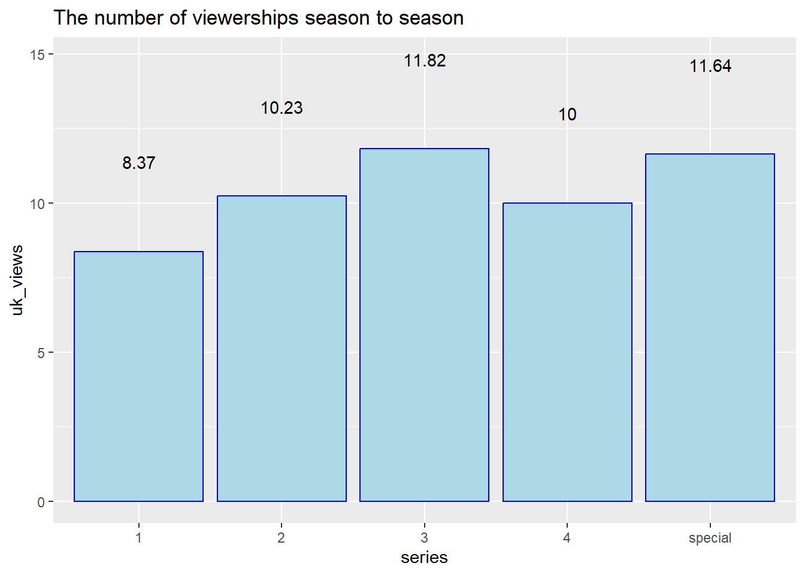
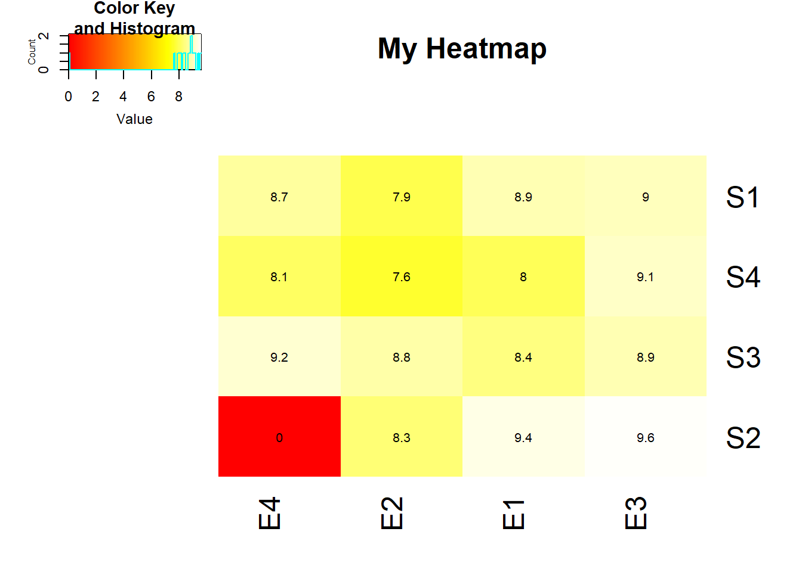

Holmes Quarto
YAML, rendering and parameters
1 A brief Description
Sherlock is a British mystery crime drama television series based on Sir Arthur Conan Doyle’s Sherlock Holmes detective stories. Created by Steven Moffat and Mark Gatiss, it stars Benedict Cumberbatch as Sherlock Holmes and Martin Freeman as Doctor John Watson. Thirteen episodes have been produced, with four three-part series airing from 2010 to 2017 and a special episode that aired on 1 January 2016. The series is set in the present day, while the one-off special features a Victorian period fantasy resembling the original Holmes stories. Sherlock is produced by the British network BBC, along with Hartswood Films, with Moffat, Gatiss, Sue Vertue and Rebecca Eaton serving as executive producers. The series is supported by the American station WGBH-TV Boston for its Masterpiece anthology series on PBS, where it also airs in the United States. The series is primarily filmed in Cardiff, Wales, with North Gower Street in London used for exterior shots of Holmes and Watson’s 221B Baker Street residence.

According to overnight data provided by the Broadcasters’ Audience Research Board (BARB), the highest overnight figure from the first series of Sherlock was 7.5 million for the opening episode, “A Study in Pink”, whereas the second series averaged over 8 million viewers.[129] The three episodes of series two were the three most watched programmes on iPlayer, the BBC’s video-on-demand service, between January and April 2012. Its opening episode, “A Scandal in Belgravia”, attracted controversy from the tabloid newspaper Daily Mail, which reported that Irene Adler’s nude scene early in the episode had been met with disapproval from some viewers who were concerned that it had been shown before the 9:00 pm watershed hour, before which adult-orientated content is not supposed to air. Some critics also took exception to Moffat’s treatment of Irene Adler, arguing that she was sexualised, an argument rejected by others, including Moffat. The series’ conclusion, “The Reichenbach Fall”, in which Sherlock fakes his suicide by jumping from St Bartholomew’s Hospital, led to speculation on forums, social networking sites and in newspaper articles about its resolution.
The third series became the UK’s most watched drama series since 2001. An average 11.82 million people watched the series, with about 12.72 million tuning in for the first episode. The 2016 New Year’s Day special drew 11.64 million viewers. The fourth series opened with 11.3 million viewers for the first episode, but dropped to 5.9 million viewers by the final episode of the fourth series, the lowest overnight ever recorded by the show.
2 A graph of the season-to-season changes in viewership
In this graph below, we see the number of viewerships (in millions) over the series.
E1 E2 E3 E4
S1 8.9 7.9 9.0 8.7
S2 9.4 8.3 9.6 0.0
S3 8.4 8.8 8.9 9.2
S4 8.0 7.6 9.1 8.1
The most rated episode is the Episode 3 of Season 2 (9.6), meanwhile the least rated episode is the Episode 2 Season 4 (7.6).
THANK YOU!